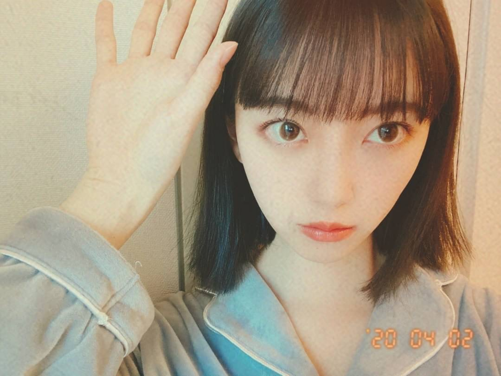

2020/0404Satばっさり
Mステでサプライズお披露目しましたが、
髪切りました
ずっと伸ばしててやっとロングになったのですが
思い切って久しぶりに短く☺︎
ロング派の人、すみません
ちょくちょくInstagramとかブログにロング写真も
載せますね
今回は
切りっぱなしボブ でちょっと重めな感じです!

サプライズ成功かな？
サプライズ成功かな？
Mステで初お披露目にしてびっくりさせたくて...
どうですか...？
見つけてもらえたかなぁ
どうですか...？
見つけてもらえたかなぁ
仕事場に行ったらみんな気づいてくれて
ひなちまがかわいいって言いにきてくれて
いくちゃんもまいちゅんもれんかも
好きって言ってくれて
切り立ての毛先を白石さんといくちゃんと
切り立ての毛先を白石さんといくちゃんと
松村さんと高山さんに囲まれてふさふさ触られて
日奈子にもボブを持ち上げられて
毛先が喜んでました。笑
すぐに気づいて褒めてくれるメンバーが
日奈子にもボブを持ち上げられて
毛先が喜んでました。笑
すぐに気づいて褒めてくれるメンバーが
大好きだなぁと改めて☺︎
切りすぎたかなぁと思ってたからよかった。


そういえば乃木坂に入って
初めて髪をショートにした時も3月末とかだったなぁ
懐かしい
髪っていろんなものが詰まってるので
今は心も頭もさっぱりしてます
春ですね、
あ〜
5月27日にはよならんかな〜
写真集いい感じに仕上がってます!
早く見てほしいですᕦ(ò_óˇ)ᕤ✨
ちなみに表紙が決まりまして
通常版1種、限定盤3種の計4種類です!
まだお見せできないのですが
動画で私が説明してますので、是非。
さまざまな特典も先着であります!
御予約はこちらから☺︎
ふふふ

いま、ゴルゴンゾーラを聴いているのですが
ゴルゴンゾーラのレコーディングの時、
実は風邪をひいていて声がハスキーになっていまして
"変わりものばかりいつも惹かれてしまうのはなぜだろう"
"もっとアクが強い人と喧嘩をしながら"
改めて聞いてたら全然声違うやん！
ってなりました笑
話急に逸れたけど
よかったら注目してみて聞いてください✰
絢音がいつもゴルゴンゾーラを褒めてくれるの笑
かわいい歌だねって
私が特に好きな歌詞は
"趣味が悪かろうがなにを言われようが自分が良けりゃいいでしょ？"
"だれからも好かれてちゃ独り占めできない"
かなぁ
みなさんのゴルゴンゾーラ での
好きな歌詞はありますか？
変わり者が変わり者を好きになった感じが
かわいくて好きな世界観だし
普通じゃ物足りないじゃん!っていう邪道もいいし
チーズ好きだし
モッツァレラよりゴルゴンゾーラだし
好きが詰まった曲ですね
映画でいう、"アメリ"とか"勝手にふるえてろ"みたいな世界観です
また好きな歌の好きな歌詞紹介します!
好きな歌を好きな映画に例えるのもわかる人にはわかりそうでいいかも！
これ楽しい☺︎！
普段歌詞見ながら音楽聞く派なので
話したくて仕方ないんです。笑

ちなみに
最近観て面白かった映画は
ハッピーデスデイ
最低で最高のサリー
です☺︎
この2つの映画は全然違うジャンルだけど
これをみて感じたことは、
考えてから言葉を発さないといけないってことと
毎日を一生懸命に生きるって大事だなということ
取り消せないものの1つに"言葉"があるなぁと思っていて
何気ない一言で相手を傷つけてたりするし
自分の正直に何でも言う部分は大事にしたいけど
言葉を言う前に考える瞬間も本当に大切だなって。
だってその一言でいろんなことが変わってしまうんだから。ハッピーデスデイを見て痛感しました
無意識に人を傷つけることほど
怖いものはないですもんね...
人生やり直せたらって思っても
やり直しはもちろんきかないし
だからこそ自分に相手に、正直になって
毎日を生きるって大切だなぁと。
不器用だったら変に器用ぶらないで、
不器用らしくぶつかっていこ〜
ワハハ
急募
口内炎が治る方法
ではは
2020/04/04 12:36
コメント(649)
ボブもいいと思うよ。超ロングにしてお団子ヘアーとかも似合うとおもうよ。
きーちゃんにボブ
を直接持ち上げられて
皆にも可愛い可愛い
って持ち上げられたんだ？
よかったね！！(*≧∀≦*)


を直接持ち上げられて
皆にも可愛い可愛い
って持ち上げられたんだ？
よかったね！！(*≧∀≦*)
改めてバージョン。
未央奈ちゃん、顔だちが良いからボブも似合う！
変わり者どうし好きになるってなんか聞き覚えが。。？(゜゜)
あぁなんで～ 好き～にな～ちゃったの～かな～？
わたすぃ～ って少し 変わり者なの～ね～♪
西野カナさん Darling
乃木坂以外で好きな曲のひとつです。
あと、ブログを読んでて浮かんできたのは、欅坂46
君は君らしく 生きていく自由があるんだ 大人達に支配されるな
と、アンビバレント。
未央奈ちゃん、顔だちが良いからボブも似合う！
変わり者どうし好きになるってなんか聞き覚えが。。？(゜゜)
あぁなんで～ 好き～にな～ちゃったの～かな～？
わたすぃ～ って少し 変わり者なの～ね～♪
西野カナさん Darling
乃木坂以外で好きな曲のひとつです。
あと、ブログを読んでて浮かんできたのは、欅坂46
君は君らしく 生きていく自由があるんだ 大人達に支配されるな
と、アンビバレント。
堀ちゃん こんばんは！！ (^_^)
そうなんですよね！！ (^_-)-☆
うたコン（3/31日）では ロングヘアー。
Mステ（4/3日）では 15センチ ぐらいカット。
気付いていたのに 忙しくて コメントできなくて 残念！！ (^_^;)
まだ 寒いので 風邪ひかないでね！！ (^_-)-☆
女子は 髪切ったり 伸ばしたり (^。^)y-.。o○
ばいばい (@^^)/~~~
ps:桜も 満開と なりました！！ (^^♪
携帯で 写真 撮りました。
そうなんですよね！！ (^_-)-☆
うたコン（3/31日）では ロングヘアー。
Mステ（4/3日）では 15センチ ぐらいカット。
気付いていたのに 忙しくて コメントできなくて 残念！！ (^_^;)
まだ 寒いので 風邪ひかないでね！！ (^_-)-☆
女子は 髪切ったり 伸ばしたり (^。^)y-.。o○
ばいばい (@^^)/~~~
ps:桜も 満開と なりました！！ (^^♪
携帯で 写真 撮りました。
ボブ似合ってます！
あなたの何でも正直に言う生き方が大好きです
あなたの何でも正直に言う生き方が大好きです
ブログ更新ありがとう！！
バイトでMステ見れなかったのでボブにしたのブログで知りました。
めちゃめちゃ似合ってるし、めちゃめちゃかわいい♡
うちは未央奈ちゃんのボブが大好きです！！
だから、ありがとう♡
バイトでMステ見れなかったのでボブにしたのブログで知りました。
めちゃめちゃ似合ってるし、めちゃめちゃかわいい♡
うちは未央奈ちゃんのボブが大好きです！！
だから、ありがとう♡
好き。
未央奈〜
口内炎出来ちゃったの？治し方わかんないけど、私前口内炎をさらに噛んだことあるから気をつけてね笑
それからボブ未央奈、サプライズされた〜！Mステ見てお母さんと｢えー！未央奈髪切った！｣って叫んじゃったもん笑
Mステの衣装めちゃ可愛かった
今まで未央奈は長い派だったけど短いのもやっぱ好き！
あと、写真集めっちゃ楽しみだし、インスタもちゃんとチェックしてるよ！
コロナに気をつけてね！
口内炎出来ちゃったの？治し方わかんないけど、私前口内炎をさらに噛んだことあるから気をつけてね笑
それからボブ未央奈、サプライズされた〜！Mステ見てお母さんと｢えー！未央奈髪切った！｣って叫んじゃったもん笑
Mステの衣装めちゃ可愛かった
今まで未央奈は長い派だったけど短いのもやっぱ好き！
あと、写真集めっちゃ楽しみだし、インスタもちゃんとチェックしてるよ！
コロナに気をつけてね！
未央奈さん。ブログ更新ありがとう。どこにでもいるおっさんです。
いやー。昨日のMｽﾃ、びびった。
サプライズすぎん？
自分はどちらかと言うとショート派なので、マジで？ かつらじゃないよね？ と未央奈さんが映るたびに釘づけでした。
言葉って、ほんとに重いですよね。自分は、かっとするとつい大声で相手に酷い言葉を投げつけてしまいます。
しかし、１度発せられた言葉は、取り消すことができない。
人生、やり直したいと思っても、やり直すことはできない。
なんか、考えさせられるブログでした。ありがとう。
未央奈さん。たまには、息をついてね。
ひでき
いやー。昨日のMｽﾃ、びびった。
サプライズすぎん？
自分はどちらかと言うとショート派なので、マジで？ かつらじゃないよね？ と未央奈さんが映るたびに釘づけでした。
言葉って、ほんとに重いですよね。自分は、かっとするとつい大声で相手に酷い言葉を投げつけてしまいます。
しかし、１度発せられた言葉は、取り消すことができない。
人生、やり直したいと思っても、やり直すことはできない。
なんか、考えさせられるブログでした。ありがとう。
未央奈さん。たまには、息をついてね。
ひでき
チャァオ～～!☆彡
みおちゃん❕❤️❤️❤️❤️❤️笑顔
口内炎が治る方法？
ビタミンB2を摂ることと、毎日の自分の生活を振り返ることかなぁ❕❔❤️❤️❤️❤️❤️笑顔
あぁ！でも、口内炎なの～～❔
みおちゃん最初に、最近何が原因か考えましょ～～❕❔
おいら～～過去に～～・・
お茶をガブ飲み過ぎて、胃液が薄くなったり
季節の変わり目で、胃腸の調子が悪くなったり
甘い物をとりすぎたりとか～
あと薬の副作用で胃腸の調子が悪くなったと同時に、口内炎になったこともあるけど～～⤴️⤴️
ここ、2、3年は口内炎になってないや～～⤴️⤴️❕笑顔
今は、上記のことに気をつけているし
薬の副作用で胃が重たく荒れる場合は、直ぐに修復薬を飲んでるし❕笑顔
みおちゃん❕・・
とりあえず、お医者様に行ってみてねぇ❕❤️❤️❤️❤️❤️笑顔
お大事に、またねぇ❕❤️❤️❤️❤️❤️笑顔
(σ≧▽≦)σ❤️❤️❇️❇️
❇️❇️おすまし！より⚜️❇️彡
僕は口内炎できた時いつもよりビタミンとってます。(ビタミン剤等)
堀さん、写真集待ち遠しいです。
髪の毛切ったんだねー
どちらかと言えばショート派なので嬉しい。
口内炎〜痛くてヤダよねー
①塗り薬 チューブに入ったもの
②貼るタイプ 自然に溶けるタイプ
やっぱり薬が早く治ると思います。
お大事にしてください。
髪の毛切ったんだねー
どちらかと言えばショート派なので嬉しい。
口内炎〜痛くてヤダよねー
①塗り薬 チューブに入ったもの
②貼るタイプ 自然に溶けるタイプ
やっぱり薬が早く治ると思います。
お大事にしてください。
未央奈更新ありがと！
俺も口内炎よくできるけど、一番トラフルBBチャージが効くよ！薬以外でも、紅茶飲んだり、はちみつ食べたりして殺菌させるのも大事だよ！
早く治るといいね！
俺も口内炎よくできるけど、一番トラフルBBチャージが効くよ！薬以外でも、紅茶飲んだり、はちみつ食べたりして殺菌させるのも大事だよ！
早く治るといいね！
この頃のロングも好きだけどボブ未央奈も両方好き( ＾Д＾)
口内炎は意識したいことが大事！！
髪はショート派なので、すっごく嬉しい(>_<)
未央奈可愛いー！！
髪はショート派なので、すっごく嬉しい(>_<)
未央奈可愛いー！！
可愛い！わたしも触りたい…！笑
みんなが未央奈ちゃんを囲んでるのが目に浮かぶなぁ♪
大好き❤️
みんなが未央奈ちゃんを囲んでるのが目に浮かぶなぁ♪
大好き❤️
ショートヘアー似合うわぁ
口内炎は塩水で口を濯ぐと効果的ですよー！！
Mステ最高でしたー！
髪型も最高ですー！
応援してます！
Mステ最高でしたー！
髪型も最高ですー！
応援してます！
短い方が好きかも！
ほんとに似合ってる！ 最高です！
ほんとに似合ってる！ 最高です！
ホント、バッサリいきましたよねー！
Mステ冒頭で、『あれっ!?』と思いました！
先日のブログは、フリだったんだなぁ。
見事なサプライズでした♪
ゴルゴンゾーラはサビ後の『もっと変わり者、ヨロシク♪』の部分かなぁ。
レコメン！でも風邪引いてハスキーだったというお話、されてましたね。
口内炎、早く治す方法は分からないですが、口内炎の部分にパッチを貼るやつ(ト○フルダイ○クト)は、食べてもシミなくて良い感じですよ☆
Mステ冒頭で、『あれっ!?』と思いました！
先日のブログは、フリだったんだなぁ。
見事なサプライズでした♪
ゴルゴンゾーラはサビ後の『もっと変わり者、ヨロシク♪』の部分かなぁ。
レコメン！でも風邪引いてハスキーだったというお話、されてましたね。
口内炎、早く治す方法は分からないですが、口内炎の部分にパッチを貼るやつ(ト○フルダイ○クト)は、食べてもシミなくて良い感じですよ☆
モッツァレラ嫌いじゃないけどノーマルじゃ物足りない誰からも好～かれてちゃ独り占めできな～い～
のとこが好きです。まぁ未央奈さん好きなんですけどね。
のとこが好きです。まぁ未央奈さん好きなんですけどね。
更新は嬉しいありがとう
Mステ見れなかった～
けど今ブログ見て本当にばっさり切りましたね。
ロングもかわいいけどショートもかわいいよ
その髪で上の方を片方だけ結んでるとこ見たいな～。
口内炎の治し方わからないけど野菜とかフルーツ食べればいいんじゃないかなぁ。
Mステ見れなかった～
けど今ブログ見て本当にばっさり切りましたね。
ロングもかわいいけどショートもかわいいよ
その髪で上の方を片方だけ結んでるとこ見たいな～。
口内炎の治し方わからないけど野菜とかフルーツ食べればいいんじゃないかなぁ。
ショートもやっぱり未央奈さんは似合ってます！
とっても可愛いです!
とっても可愛いです!
ブログありがとう！
私みおなちゃんの短い方が好きです！！
もちろんどっちもかわいいんですけど！！
口内炎は私は薬塗らないと治らない人です泣
ビタミン摂るといいというのをまえ友人から聞いたのですが、ビタミン系のドリンクも染みて飲めない時はくすりにたよっています！
きっとお疲れで口内炎ができてると思うのでどうか忙しい中でも休める時間が少しでもあったらゆっくりしてください!!!
私みおなちゃんの短い方が好きです！！
もちろんどっちもかわいいんですけど！！
口内炎は私は薬塗らないと治らない人です泣
ビタミン摂るといいというのをまえ友人から聞いたのですが、ビタミン系のドリンクも染みて飲めない時はくすりにたよっています！
きっとお疲れで口内炎ができてると思うのでどうか忙しい中でも休める時間が少しでもあったらゆっくりしてください!!!
ブログ更新ありがとうございます。
何気ない言葉が傷ついちゃったりするんですよね。
未央奈ちゃんみたいな優しくて強い人間になりたい！頑張る！
蜂蜜塗ると口内炎治るらしいよ！
何気ない言葉が傷ついちゃったりするんですよね。
未央奈ちゃんみたいな優しくて強い人間になりたい！頑張る！
蜂蜜塗ると口内炎治るらしいよ！
Mステ見てびっくりしたけど可愛い♥
めっちゃ似合ってる!
めっちゃ似合ってる!
Mステ見たよ！
まさか、髪を切ってたなんて知らなかったし
未央奈ちゃんが映った瞬間、一瞬、誰かなって
思っちゃった笑
まさか、髪を切ってたなんて知らなかったし
未央奈ちゃんが映った瞬間、一瞬、誰かなって
思っちゃった笑
未央奈、こんばんは。
未央奈のショート似合ってる。
超可愛い
未央奈のショート似合ってる。
超可愛い
ボブ可愛すぎ！
口内炎めちゃくちゃ痛いですよねー
水をたくさん飲むといいですよー
でもやっぱ薬が一番いいです！飲み薬でなくぬり薬がとても効きます！
試してみてー
水をたくさん飲むといいですよー
でもやっぱ薬が一番いいです！飲み薬でなくぬり薬がとても効きます！
試してみてー
歯磨き粉をグリグリと塗ったら治るよ！
ピヨピヨピヨピヨ
JC3のひよこです
可愛すぎる未央奈ちゃん
写真集買うね
Mステで、髪切ってるのわかって
グワってなった
すんごく似合ってる
握手会行きたいです
ひよこの名札つけてくので覚えててくれたら嬉しいです
《質問》
どんな髪型の女子が好き？
じゃあまた
JC3のひよこです
可愛すぎる未央奈ちゃん
写真集買うね
Mステで、髪切ってるのわかって
グワってなった
すんごく似合ってる
握手会行きたいです
ひよこの名札つけてくので覚えててくれたら嬉しいです
《質問》
どんな髪型の女子が好き？
じゃあまた
はじめに口内炎ベタにはちみつ
切りっぱなしボブ最高に可愛いかった
まんまとやられました。最高のサプライズありがとう
5月27日はよなれ 楽しみすぎ
切りっぱなしボブ最高に可愛いかった
まんまとやられました。最高のサプライズありがとう
5月27日はよなれ 楽しみすぎ
歯科医院で、アフタゾロンという軟膏を処方してもらえば数日で治りますよ～決して刺激は与えないでください(..) 口の中は、なるべく刺激は与えてはいけませんよ－ 私もそのように患者さんに説明しております
お疲れ様です。未央奈ちゃん、バッサリとボブスタイルになったのは驚きました、でもかわいいですね!!またいろんなのに挑戦してください。
Mステ見てビックリ
さては狙ってたナ
さては狙ってたナ
Mステ見て速攻気づきました！ボブめっちゃ可愛いです！！
ボブ未央奈最高です
とても似合っているね！
堀ちゃんはショートとロングどちらも似合うからいいな〜
またインスタにいろんな角度からの写真載せてもらえると嬉しいな！
待ってます笑
ゴルゴンゾーラのお話ありがとう！
僕も大好きな曲なんだよね〜
バスラで観れて感激したよ！！
僕が好きな歌詞は「青カビタイプ」かな笑
最初聴いた時ビックリしたよ！これはパンチラインだね
ゴルゴンゾーラの名の通り、歌詞にも一癖あるのがいいよね笑
またエピソードとか裏話があったらお聞かせください
映画紹介もありがとう！
堀ちゃんのを参考にさせてもらいます笑
僕は最近「フィールドオブドリームス」を見たよ〜
いいラストだったなという感想です
口内炎を治すには、まずは寝るのだ〜！
しっかり栄養摂ってね〜
何日も治らなかったら軟膏塗ってみてね
では、またね
とても似合っているね！
堀ちゃんはショートとロングどちらも似合うからいいな〜
またインスタにいろんな角度からの写真載せてもらえると嬉しいな！
待ってます笑
ゴルゴンゾーラのお話ありがとう！
僕も大好きな曲なんだよね〜
バスラで観れて感激したよ！！
僕が好きな歌詞は「青カビタイプ」かな笑
最初聴いた時ビックリしたよ！これはパンチラインだね
ゴルゴンゾーラの名の通り、歌詞にも一癖あるのがいいよね笑
またエピソードとか裏話があったらお聞かせください
映画紹介もありがとう！
堀ちゃんのを参考にさせてもらいます笑
僕は最近「フィールドオブドリームス」を見たよ〜
いいラストだったなという感想です
口内炎を治すには、まずは寝るのだ〜！
しっかり栄養摂ってね〜
何日も治らなかったら軟膏塗ってみてね
では、またね
ゴルゴンゾーラ改めて聴いたらホントだ！
結構ハスキー笑笑
でもそんな未央奈ちゃんもかわいいです！
ゴルゴンゾーラいっぱい聴きますね！
更新ありがとー！
結構ハスキー笑笑
でもそんな未央奈ちゃんもかわいいです！
ゴルゴンゾーラいっぱい聴きますね！
更新ありがとー！
未央奈さん！サプライズ大成功ですよー！
軽く目ん玉飛び出ました！可愛くて、美しすぎます！
ショートボブが似合う人ランキング世界1位だと思います！
未央奈さんの言葉がめちゃめちゃ心の支えになりました。
ありがとうございます。
これからも応援しています。
軽く目ん玉飛び出ました！可愛くて、美しすぎます！
ショートボブが似合う人ランキング世界1位だと思います！
未央奈さんの言葉がめちゃめちゃ心の支えになりました。
ありがとうございます。
これからも応援しています。
只々可愛い
堀さん、こんばんは。
昨夜は『ミュージックステーション』出演、お疲れさまでした〜。堀さん髪切っていて吃驚（びっくり）！
ショートボブの堀さんもメンバーのみんなに好評のようですな。やっぱり切りっぱなしの髪型見ると、毛先をふさふさ持ち上げたくなるのね（笑）。
四月に入りまして、堀さん2ndソロ写真集の発売がいよいよ来月に近づいてきました。わくわく。表紙も決まったのですね。ご案内の動画を観てきました。公開楽しみ。
おお口内炎！ 実は僕も今絶賛口内炎中（何か言い方ヤダ 笑）。つらいですよね。僕は口内炎できたらビタミン剤（チョ○ラBB）を飲んでおります。飲まないよりは治りが早いのでお試しくだされ。
ではまたコメント寄せますね。おやすみおな。
さらばだ、また会おう！（気球に乗って去りぬ〜）
昨夜は『ミュージックステーション』出演、お疲れさまでした〜。堀さん髪切っていて吃驚（びっくり）！
ショートボブの堀さんもメンバーのみんなに好評のようですな。やっぱり切りっぱなしの髪型見ると、毛先をふさふさ持ち上げたくなるのね（笑）。
四月に入りまして、堀さん2ndソロ写真集の発売がいよいよ来月に近づいてきました。わくわく。表紙も決まったのですね。ご案内の動画を観てきました。公開楽しみ。
おお口内炎！ 実は僕も今絶賛口内炎中（何か言い方ヤダ 笑）。つらいですよね。僕は口内炎できたらビタミン剤（チョ○ラBB）を飲んでおります。飲まないよりは治りが早いのでお試しくだされ。
ではまたコメント寄せますね。おやすみおな。
さらばだ、また会おう！（気球に乗って去りぬ〜）
ビタミンBのサプリ飲むと良いと聞いた事あります。
やっぱりボブが似合うね！
どんな髪型でも好きだけど、ボブが好きです！
どんな髪型でも好きだけど、ボブが好きです！
写真集予約しなきゃ！(笑)
住所もわかったことですし、予約しまーす
さて、結構バッサリと切りましたねぇ
未央奈のこと初めて知ったときはショートカットだったから、なんかショートカットの未央奈が一番しっくりくるんだよね
だから、ショートのボブが未央奈の髪型で一番好きかも。
もちろん、ロングの未央奈も好きですよ。
ゴルゴンゾーラで好きな歌詞か～
どこも好きだから迷うけど、「いい人ってことは、どうだっていい人だ」とかかな～
なぜか知らないけどこの部分聴くと心に刺さるんだよね(笑)
なんだろ、歌詞も好きなんだけど、やっぱりメロディが一番好き。
未央奈はずっと言葉を大切にしてるイメージある
というか、それは公言してるよね
未央奈のワードセンスというか、言葉選び？結構好きだよ
人生、理想通りにはならないことばかりだけど、やり直しもきかないし、理想から逸れたなぁ～と思ったらそこから軌道修正できるところはしていくことも出きると思う。
限りはあるけどね。
だから、できる限り理想を追い続けたいなと思ってます。
不器用なら不器用なりに、ただひたすらに真っ直ぐ突き進んでいけばいいんだ～
ハハハ
口内炎はビタミンを摂って薬を塗る！
これに限るかと。
住所もわかったことですし、予約しまーす
さて、結構バッサリと切りましたねぇ
未央奈のこと初めて知ったときはショートカットだったから、なんかショートカットの未央奈が一番しっくりくるんだよね
だから、ショートのボブが未央奈の髪型で一番好きかも。
もちろん、ロングの未央奈も好きですよ。
ゴルゴンゾーラで好きな歌詞か～
どこも好きだから迷うけど、「いい人ってことは、どうだっていい人だ」とかかな～
なぜか知らないけどこの部分聴くと心に刺さるんだよね(笑)
なんだろ、歌詞も好きなんだけど、やっぱりメロディが一番好き。
未央奈はずっと言葉を大切にしてるイメージある
というか、それは公言してるよね
未央奈のワードセンスというか、言葉選び？結構好きだよ
人生、理想通りにはならないことばかりだけど、やり直しもきかないし、理想から逸れたなぁ～と思ったらそこから軌道修正できるところはしていくことも出きると思う。
限りはあるけどね。
だから、できる限り理想を追い続けたいなと思ってます。
不器用なら不器用なりに、ただひたすらに真っ直ぐ突き進んでいけばいいんだ～
ハハハ
口内炎はビタミンを摂って薬を塗る！
これに限るかと。
こんにちは‼︎
ブログ更新、ありがとうございます♪
切りっぱなしボブ、めっちゃ可愛い…‼︎
自分はショート派なので、正直めっちゃ嬉しいです♪
また、切りっぱなしの感じがおしゃれでいいですね‼︎
Mステ、シンクロニシティはリアルタイムで観ました。
録画してあるので、残りはあとで観ようと思っています♪
未央奈の髪型がいつもと違うことには気がついたけど…
『今のエクステってすごいなあ』って思ってました(笑)。
未央奈がその髪型でいるうちに、会いたいなあ。
まあ、今は、そんなこと言っている場合じゃないことは理解しているんだけど。
今は我慢の時。
早くいつもの生活が送れるように、頑張るしかないですね‼︎
そうそう、口内炎を早く治す方法。
口内炎の箇所を噛まないように気をつけて食べる(笑)。
口内炎って少し出っ張っているから、思わずそこを噛んじゃうんですよね〜
治りかけて、そこを噛んで、もうエンドレスになっちゃう(笑)。
気をつけてくださいね‼︎
あとは、そうだなあ。
自分は寝る前にチョコラBB飲んで、ケナログ塗ってから寝るようにしてますね。
人によって、効く効かないは違いそうだけど。
参考になれば幸いです‼︎
ではでは、また。
明日も未央奈にとっていい1日になりますように♪
P.S 4期生の掛橋さやかちゃんが、『未央奈さんがブログを頻繁に更新してくれて嬉しい』ってブログに書いてましたよ♪
自分も全くの同意です‼︎
いつも自分たちに楽しみをくれて、ありがとうございます♪
ブログ更新、ありがとうございます♪
切りっぱなしボブ、めっちゃ可愛い…‼︎
自分はショート派なので、正直めっちゃ嬉しいです♪
また、切りっぱなしの感じがおしゃれでいいですね‼︎
Mステ、シンクロニシティはリアルタイムで観ました。
録画してあるので、残りはあとで観ようと思っています♪
未央奈の髪型がいつもと違うことには気がついたけど…
『今のエクステってすごいなあ』って思ってました(笑)。
未央奈がその髪型でいるうちに、会いたいなあ。
まあ、今は、そんなこと言っている場合じゃないことは理解しているんだけど。
今は我慢の時。
早くいつもの生活が送れるように、頑張るしかないですね‼︎
そうそう、口内炎を早く治す方法。
口内炎の箇所を噛まないように気をつけて食べる(笑)。
口内炎って少し出っ張っているから、思わずそこを噛んじゃうんですよね〜
治りかけて、そこを噛んで、もうエンドレスになっちゃう(笑)。
気をつけてくださいね‼︎
あとは、そうだなあ。
自分は寝る前にチョコラBB飲んで、ケナログ塗ってから寝るようにしてますね。
人によって、効く効かないは違いそうだけど。
参考になれば幸いです‼︎
ではでは、また。
明日も未央奈にとっていい1日になりますように♪
P.S 4期生の掛橋さやかちゃんが、『未央奈さんがブログを頻繁に更新してくれて嬉しい』ってブログに書いてましたよ♪
自分も全くの同意です‼︎
いつも自分たちに楽しみをくれて、ありがとうございます♪
未央奈ちゃん！
ブログ更新お疲れ様です！！
未央奈ちゃんのショートは自分的にめちゃくちゃストライクなので、久しぶりに見れて嬉しいです！！(っω<。)ｸｩ
掛橋沙耶香ちゃんのブログにもコメントしてしまいました！！笑
さあちゃんもブログでショートの写真をあげてたので！！
唐突の質問です！笑
お二人はさあちゃんから食事に誘って2人でお食事をしたとのことですが、その後2人でどこかに行ったりとかはあったんですか！？！？仲良くなったエピソードとかありますか！？
教えていただけたら嬉しいです！！
ゴルゴンゾーラとワタボコリは2期生のユニットで好きな二曲です！！
目覚ましにしてるんですけど、気持ちよく起きれます！未央奈ちゃんときいちゃんと蘭世ちゃんとみり愛ちゃんのこえで癒されておりますσ)>ω<*)ﾃﾍ
ブログいつも楽しみにしていますが、無理をせず体調には気をつけてください！毎度のことですがこれからも応援してます！！
ハチ
ブログ更新お疲れ様です！！
未央奈ちゃんのショートは自分的にめちゃくちゃストライクなので、久しぶりに見れて嬉しいです！！(っω<。)ｸｩ
掛橋沙耶香ちゃんのブログにもコメントしてしまいました！！笑
さあちゃんもブログでショートの写真をあげてたので！！
唐突の質問です！笑
お二人はさあちゃんから食事に誘って2人でお食事をしたとのことですが、その後2人でどこかに行ったりとかはあったんですか！？！？仲良くなったエピソードとかありますか！？
教えていただけたら嬉しいです！！
ゴルゴンゾーラとワタボコリは2期生のユニットで好きな二曲です！！
目覚ましにしてるんですけど、気持ちよく起きれます！未央奈ちゃんときいちゃんと蘭世ちゃんとみり愛ちゃんのこえで癒されておりますσ)>ω<*)ﾃﾍ
ブログいつも楽しみにしていますが、無理をせず体調には気をつけてください！毎度のことですがこれからも応援してます！！
ハチ
未央奈〜こんばんは!Ｍステばっちり観たよ!良かったよ!!おそらく初コメのミウラミノルより
こんばんは。セブンだよ(ฅ'ω'ฅ)♪
今日も1日お疲れさまです
髪めっちゃ良きです！
断然ショート派なので
今の方が好きです
特に未央奈は似合ってると思う
ロングの時もお人形みたいで可愛かったけど
今の方が未央奈って感じがする
とにかく好き！
喋る前に考えることも大事かもしれないけど
思ったことをすぐ言ったほうが未央奈はいいと思うよ
人を傷つけることさえ言わなければ大丈夫！
素直に生きてください
では、明日も1日楽しんで生きましょうd(@^∇ﾟ)/ﾌｧｲﾄｯ♪
おやすみおな☪️
今日も1日お疲れさまです
髪めっちゃ良きです！
断然ショート派なので
今の方が好きです
特に未央奈は似合ってると思う
ロングの時もお人形みたいで可愛かったけど
今の方が未央奈って感じがする
とにかく好き！
喋る前に考えることも大事かもしれないけど
思ったことをすぐ言ったほうが未央奈はいいと思うよ
人を傷つけることさえ言わなければ大丈夫！
素直に生きてください
では、明日も1日楽しんで生きましょうd(@^∇ﾟ)/ﾌｧｲﾄｯ♪
おやすみおな☪️


チョコラBB飲んで口内炎治して
ハッピーデスデイ2は見ましたか？
シリーズモノはやはり、初回が面白いと思う。
私は、ジェイソンボーンやら007やらが好きです。